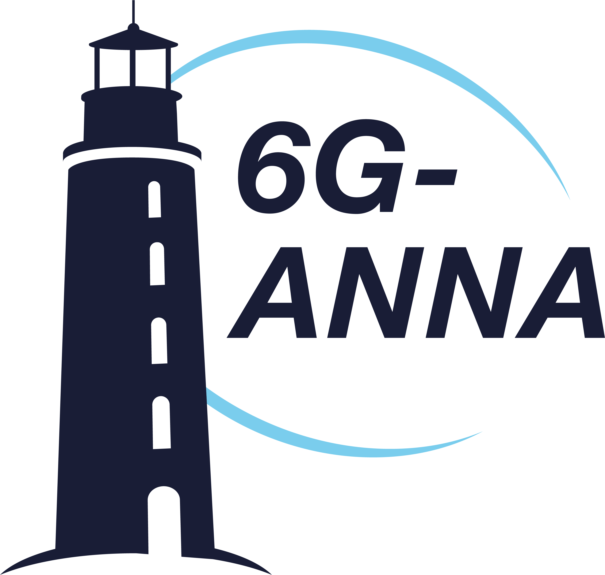
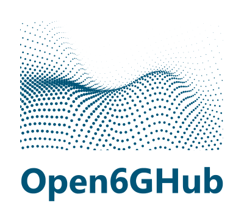

Wireless Communications Research for Reliable Next-Generation Networks
I am interested in robust and practical approaches to future wireless communication systems, with a focus on 6G wireless communications, industrial subnetworks, non-terrestrial networks, distributed beamforming, agentic AI for RAN, digital twin methods, and predictive interference management. My work connects modeling, simulation, and algorithm design for future wireless communication systems.
About Me
I am Pramesh Gautam, a PhD Candidate and Research Assistant in Wireless Communications. My research centers on reliable and adaptive communication strategies for challenging wireless environments, particularly in industrial, non-terrestrial, and satellite communication settings.
I am especially interested in how predictive methods, distributed optimization, digital twins, and realistic simulation frameworks can improve system robustness and support the demands of future wireless networks, including HRLLC and Satellite communication use cases.
Academics
-
Ongoing
-
M.Sc., University of Bremen
-
B.E., Kathmandu University
Professional Experience
-
PhD Candidate / Research Assistant
2022 – PresentResearch on reliable physical-layer communication systems for 5G/6G networks, with a focus on interference prediction, link adaptation, industrial subnetworks, probabilistic modeling, and robust wireless system design.
- Design and evaluation of communication and signal-processing algorithms for reliable wireless systems under time-varying propagation, interference, and uncertainty.
- Development of MATLAB- and Python-based simulation workflows for link-level and system-level evaluation.
- Modeling of multipath propagation, fading, mobility, delay spread, Doppler effects, blockage, and dynamic interference.
- Research on reliability-aware SINR and interference prediction, link adaptation, beamforming, and resource allocation.
- Application of Bayesian inference, extreme value theory, Kalman filtering, machine learning, and distributionally robust optimization to wireless communication problems.
- Contribution to 6G-ANNA and related 6G research activities.
-
Student Research Assistant
Oct. 2021 – Aug. 2022Worked on AI, machine learning, and data-driven modeling for engineering and autonomous-system applications.
- Dataset preparation, preprocessing, training, validation, and evaluation of machine-learning models.
- Development and extension of Python- and C++-based research software.
- Support for experimental analysis, technical documentation, and collaborative research workflows.
- Experience with Linux-based development environments and HPC clusters.
-
Telecom Engineer, Deployment and Commissioning
Jun. 2016 – Aug. 2018Worked on deployment, commissioning, and field verification of cellular network equipment in operational 2G/3G/4G networks.
- Site integration, commissioning, RF testing, and acceptance verification.
- Troubleshooting of installation and deployment issues.
- Coordination with technical teams during network rollout and field operations.
-
Telecom Engineer, Performance Analysis and Optimization
Jun. 2016 – Aug. 2018Worked on radio-network performance analysis, optimization, and measurement-based diagnosis for operational mobile networks.
- Analysis of drive-test data, network logs, KPIs, and diagnostic measurements.
- Identification of coverage, interference, throughput, and link-performance bottlenecks.
- Support for network optimization, technical reporting, and evidence-based engineering decisions.
Research Interests
Publications
For the most up-to-date list, please see my Google Scholar profile.
2026
-
PublicationP. Gautam, C. Arendt, S. Fricke, C. Bockelmann, A. Dekorsy, and C. Wietfeld, “RASP: Reliability-Aware SINR Prediction for Realistic Industrial Subnetworks”, May 24, 2026.
-
ConferenceM. Vakilifard, P. Gautam, C. Bockelmann, and A. Dekorsy, “Deep Learning Based Link Quality Prediction for Direct-to-Device LEO Communication Under Inter-Constellation Interference”, 30. VDE/ITG Fachtagung Mobilkommunikation, 2026.
-
JournalC. Bockelmann, A. Danaee, A. Dekorsy, P. Gautam, D. Wübben, et al., “AI/ML-Driven 6G Network Solutions with Energy Efficiency Considerations”, IEEE Access, 2026.
-
JournalB. Banerjee, B. Agarwal, A. Ahmad, C. Bockelmann, P. Gautam, et al., “6G PHY: Insights From 6G-ANNA Research Initiative”, IEEE Open Journal of the Communications Society, 2026.
-
JournalP. Gautam, B. A. G. R. Sharan, P. Baracca, C. Bockelmann, T. Wild, and A. Dekorsy, “CQI-Based Interference Prediction for Link Adaptation in Industrial Sub-networks”, IEEE Wireless Communications Letters, 2026.
2025
-
JournalP. Gautam, S. Sapkota, C. Bockelmann, S. R. Pandey, and A. Dekorsy, “Extreme Value Theory-Based Distributed Interference Prediction for 6G Industrial Sub-Networks”, IEEE Open Journal of the Communications Society, 2025.
-
JournalP. Gautam, C. Bockelmann, and A. Dekorsy, “Probabilistic Interference Prediction for Dynamic 6G In-X Sub-Networks”, IEEE Open Journal of the Communications Society, 2025.
-
ConferenceP. Gautam, C. Bockelmann, and A. Dekorsy, “Extreme Value Theory-Based Predictive Interference Management for 6G Subnetworks with Transformer”, IEEE International Conference on Communications, ICC 2025, 2025.
-
ConferenceP. Gautam, R. S. B. A. G., P. Baracca, C. Bockelmann, T. Wild, and A. Dekorsy, “Dynamic Interference Prediction for In-X 6G Sub-Networks”, 14th International ITG Conference on Systems, Communications and Coding, SCC 2025, 2025.
-
JournalS. Shafaei, A. Palaios, Z. Ennaceur, J. Zhang, V. Pandit, P. Gautam, et al., “Toward AI in 6G: Concepts, Techniques, and Standards”, IEEE Access, 2025.
2024
-
Book/ReportS. Baradie, L. Bassbouss, A. Bathelt, P. Gautam, et al., “German Perspective on 6G Use Cases, Technical Building Blocks and Requirements”, FAU University Press, 2024.
-
ConferenceP. Gautam, C. Bockelmann, and A. Dekorsy, “Interference Prediction in Unconnected In-X Mobile 6G Subnetworks Using a Data-Driven Approach”, IEEE International Conference on Communications Workshops, ICC Workshops, 2024.
2023
-
ConferenceP. Gautam, M. A. Vakilifard, C. Bockelmann, and A. Dekorsy, “Cooperative Interference Estimation Using LSTM-Based Federated Learning for In-X Subnetworks”, IEEE Global Communications Conference, GLOBECOM 2023, 2023.
Early Publications
-
Early WorkP. Gautam, P. Lohani, and B. Mishra, “Peak-to-Average Power Ratio Reduction in OFDM System Using Amplitude Clipping”, IEEE Region 10 Conference, TENCON, 2016.
-
Early WorkP. Gautam, “Analysis of Effect of Clipping and High-Power Amplifier Non-linearities in OFDM System”, Encipher, 2015.
Projects
-

6G-ANNA
-

Open6GHub
-
Open6GHub+
Supervised Theses and Student Projects
Selected student projects and theses supervised or co-supervised in the area of 6G wireless communications, industrial subnetworks, ray tracing, interference prediction, and resource allocation.
-
Ray Tracing for Channel Modeling in 6G Subnetworks
-
Dynamic Power Control for In-X Subnetworks
-
Probabilistic Interference Prediction using Machine Learning for In-X Subnetworks
-
Dynamic Resource Allocation for 6G Network of Networks
Ongoing
-
Learning-Based Beam Management and Beam Prediction for 6G Wireless Networks
-
Agentic AI for Physical-Layer Optimization in 6G Communication Systems
-
Digital Twin-Assisted Channel and Interference Modeling via Measurement Fusion
-
Reinforcement Learning-Based Link Adaptation for Reliable 5G/6G Communications
Technical Skills
-
Wireless Communications and PHY/MAC
- 5G/6G wireless systems
- 3GPP NR PHY
- Link adaptation
- Beamforming
- Resource allocation
- Interference analysis
- Reliability-aware communication
- Industrial subnetworks and HRLLC
- Non-terrestrial networks
-
Signal Processing and Channel Modeling
- Digital signal processing
- OFDM
- Multipath propagation
- Fading channels
- Mobility effects
- Delay and Doppler analysis
- TR 38.901 channel models
- Ray tracing with Sionna/Sionna-RT
-
Probabilistic Modeling and Optimization
- Bayesian inference
- Extreme value theory
- Kalman filtering
- Heavy-tailed modeling
- Stochastic modeling
- Convex optimization
- Distributionally robust optimization
- CVaR-based reliability modeling
-
Machine Learning for Wireless Communications
- LSTM/GRU
- Transformer-based prediction
- Federated learning
- Reinforcement learning
- Learning-based link adaptation
- Beam prediction
- Measurement-data-driven modeling
-
Programming and Tools
- MATLAB
- Python
- C++
- Linux
- OMNeT++
- Wireshark
- Sionna
- Sionna-RT
- Git/GitHub
- Scientific visualization
- Simulation and measurement-data analysis
Contact
The best way to reach me is by email at prameshgtm@gmail.com.
You can also add your Google Scholar, LinkedIn, and CV links in the profile section once those pages are ready.